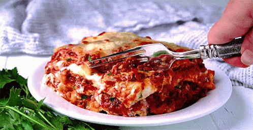

Lasagna

Description
Meaty, cheesey goodness - yes, she is lasagna! The one and only,
arguably the best comfort dish. Follow the below steps to create
this Italian masterpiece at home.
Ingredients
- Lasagna noodles
- 1 pound lean ground beef
- salt and pepper to taste
- 1 jar spaghetti sauce
- 3 close garlic
- 1/2 pound shredded mozzarella cheese
- 1 pint ricotta cheese
Steps
- Bring a large pot of lightly salted water to a boil. Add pasta and cook for 8 to 10 minutes or until al dente; drain.
- Preheat oven to 350 degrees F (175 degrees C). In a large skillet over medium-high heat, brown beef and season with salt and pepper; drain. Stir in spaghetti sauce and garlic and simmer 5 minutes.
- In a medium bowl, combine mozzarella, Cheddar and ricotta; stir well. In 9x13 inch pan, alternate layers of noodles, meat mixture and cheese mixture until pan is filled.
- Bake in preheated oven for 30 minutes, or until cheese is melted and bubbly.
Last but not least, don't forget to enjoy your yummy creation!
Return to main